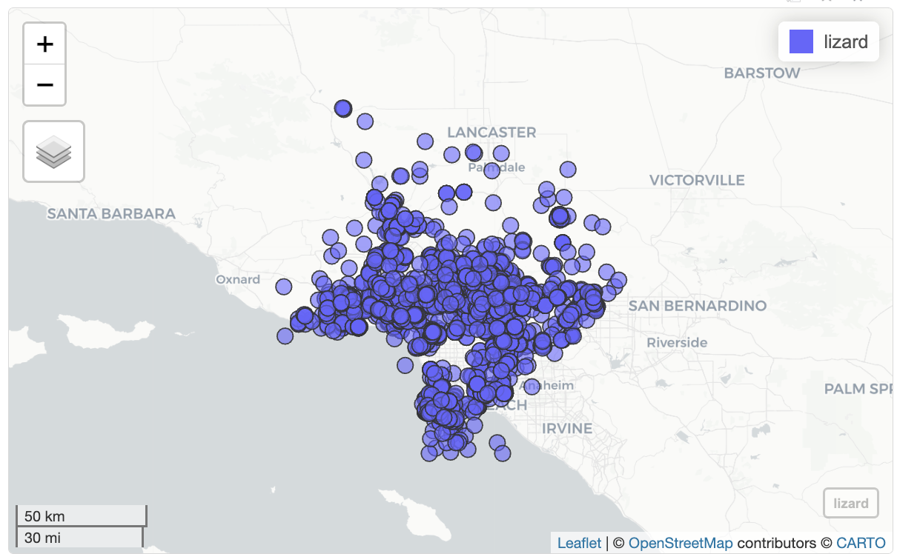

library(readr) # read and write tabular data
library(dplyr) # manipulate data
library(ggplot2) # create data visualizations
library(stringr) # work with string
library(lubridate) # manipulate dates
library(here) # file paths
library(sf) # handle vector geospatial data
library(mapview) # create interactive maps
library(basemaps) # access open source basemaps
library(tigris) # access TIGER/Line shapefiles
library(pdftools) # process pdfs
library(webshot2) # save mapview mapsIntroduction to Data Analysis
Questions
- How do we begin to analyze iNaturalist data?
Objectives
- Learn how to download data from iNaturalist.
- Learn about the different ways to analyze tabular data.
- Get an overview of the workshop.
iNaturalist data
When iNaturalist users add an observation through the iNaturalist app, that data is saved to the iNaturalist database. People can download the iNaturalist data as CSVs.
Note
CSV comma-separated values
CSV is a text file format for tabular data. Each line represents one record. Each column represents a field. The fields are separated by commas. CSVs can be opened in text editors or spreadsheet programs.
CSV as plain text file.
CSV in CSV or spreadsheet application.
The iNaturalist CSV has information about:
- the user who made observation
- the location of the observation
- the observed species
- links for photos, videos, sounds
Here’s a rough draft that lists descriptions for each field.
Downloading iNaturalist data
If you would like to download iNaturalist data, here’s some info.
How to Search iNaturalist Observations
step-by-step to download iNaturalist data
To save time and ensure everyone at the workshop has the same data, we provide a CSV with data from iNaturalist City Nature Challenge Los Angeles from 2013 to 2024. We made some changes to the CSVs we downloaded from iNaturalist, and the code we used edit the CSV is available here.
Note: Another place to download iNaturalist data is Global Biodiversity Information Facility (GBIF). iNaturalist recommends using GBIF for large downloads. Many researchers use GBIF downloads because GBIF provides a Digital Object Identifier (DOI) that people can cite in their publications.
Analyzing data using R
It is difficult for people to see any patterns when reading rows after row of text. To make it easier to see patterns, we can use software to analyze tabular data.
There are various tools to analyze tabular data including spreadsheets applications like Excel and Google Sheets, and programming languages such as R and Python. If the data has location information, Geographic Information Systems (GIS) such ArcGIS and QGIS can be used.
In this workshop we will use R programming language to analyze iNaturalist data. Programming languages allow people to write instructions to tell a computer to do stuff. The reason we are using R is because R is a popular language in ecology research.
Workshop overview
Here’s an overview of what we learn in this workshop.
Load software that will will need.
Load iNaturalist data from City Nature Challenge Los Angeles 2013-2024. There are over 191,000 observations.
inat <- read_csv(here("data/cleaned/cnc-los-angeles-observations.csv.zip"))Select the data you want. For instance, get all the research grade observations for one user.
inat |>
filter(user_login == 'natureinla' &
quality_grade == 'research') |>
select(user_login, common_name, scientific_name, observed_on)# A tibble: 1,556 × 4
user_login common_name scientific_name observed_on
<chr> <chr> <chr> <date>
1 natureinla Red-eared Slider Trachemys scripta elegans 2016-04-14
2 natureinla Monarch Danaus plexippus 2016-04-14
3 natureinla San Diego Gopher Snake Pituophis catenifer annectens 2016-04-14
4 natureinla California Towhee Melozone crissalis 2016-04-14
5 natureinla Cooper's Hawk Astur cooperii 2016-04-14
6 natureinla Monarch Danaus plexippus 2016-04-14
7 natureinla Allen's Hummingbird Selasphorus sasin 2016-04-14
8 natureinla Northern Mockingbird Mimus polyglottos 2016-04-15
9 natureinla House Sparrow Passer domesticus 2016-04-15
10 natureinla Indian Peafowl Pavo cristatus 2016-04-15
# ℹ 1,546 more rowsCreate summaries of the data. For instance, get the 10 most commonly observed ‘species’.
top_10 <- inat |>
select(common_name, scientific_name) |>
count(common_name, scientific_name, name='count') |>
arrange(desc(count)) |>
slice(1:10)
top_10# A tibble: 10 × 3
common_name scientific_name count
<chr> <chr> <int>
1 Western Fence Lizard Sceloporus occidentalis 3339
2 Western Honey Bee Apis mellifera 2060
3 dicots Magnoliopsida 2013
4 plants Plantae 1712
5 Eastern Fox Squirrel Sciurus niger 1475
6 House Finch Haemorhous mexicanus 1263
7 Mourning Dove Zenaida macroura 1205
8 flowering plants Angiospermae 1161
9 California poppy Eschscholzia californica 934
10 Convergent Lady Beetle Hippodamia convergens 929Create maps. For example, create a map showing all the observations for Western Fence Lizard
lizard <- inat |>
st_as_sf(coords = c("longitude", "latitude"), crs = 4326, remove=FALSE) |>
select(id, user_login, common_name, scientific_name, observed_on, url, longitude, latitude, geometry) |>
filter(common_name == 'Western Fence Lizard')
mapview(lizard)
Create charts. For example, create a bar chart showing the number of observations per year.
inat |>
mutate(year = year(observed_on)) |>
group_by(year) |>
ggplot(aes(x = year)) +
geom_bar()